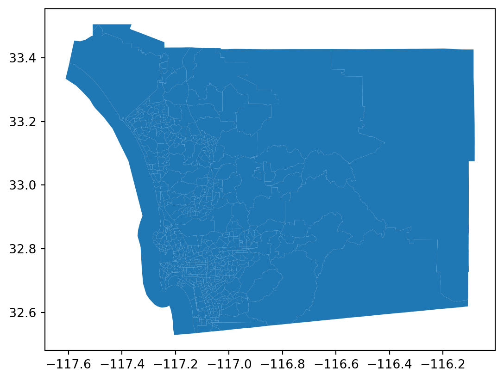

from geosnap.io import get_acsca = get_acs(datasets, state_fips=['06'], level='tract', years=[2016])
/home/serge/miniforge3/envs/workshop-pysal/lib/python3.10/site-packages/geosnap/_data.py:16: UserWarning: Streaming data from S3. Use `geosnap.io.store_acs()` to store the data locally for better performance
warn(warning_msg)
sd = ca[ca.geoid.str.startswith('06073')]
sd.plot()

sd.crs
<Geographic 2D CRS: EPSG:4269>
Name: NAD83
Axis Info [ellipsoidal]:
- Lat[north]: Geodetic latitude (degree)
- Lon[east]: Geodetic longitude (degree)
Area of Use:
- name: North America - onshore and offshore: Canada - Alberta; British Columbia; Manitoba; New Brunswick; Newfoundland and Labrador; Northwest Territories; Nova Scotia; Nunavut; Ontario; Prince Edward Island; Quebec; Saskatchewan; Yukon. Puerto Rico. United States (USA) - Alabama; Alaska; Arizona; Arkansas; California; Colorado; Connecticut; Delaware; Florida; Georgia; Hawaii; Idaho; Illinois; Indiana; Iowa; Kansas; Kentucky; Louisiana; Maine; Maryland; Massachusetts; Michigan; Minnesota; Mississippi; Missouri; Montana; Nebraska; Nevada; New Hampshire; New Jersey; New Mexico; New York; North Carolina; North Dakota; Ohio; Oklahoma; Oregon; Pennsylvania; Rhode Island; South Carolina; South Dakota; Tennessee; Texas; Utah; Vermont; Virginia; Washington; West Virginia; Wisconsin; Wyoming. US Virgin Islands. British Virgin Islands.
- bounds: (167.65, 14.92, -47.74, 86.46)
Datum: North American Datum 1983
- Ellipsoid: GRS 1980
- Prime Meridian: Greenwich
gdf.crs
<Geographic 2D CRS: EPSG:4326>
Name: WGS 84
Axis Info [ellipsoidal]:
- Lat[north]: Geodetic latitude (degree)
- Lon[east]: Geodetic longitude (degree)
Area of Use:
- name: World.
- bounds: (-180.0, -90.0, 180.0, 90.0)
Datum: World Geodetic System 1984 ensemble
- Ellipsoid: WGS 84
- Prime Meridian: Greenwich
# Replace 'GEOID' with the appropriate identifier column in your tracts GeoDataFrametract_counts = points_with_tracts.groupby('geoid').size().reset_index(name='point_count')
---title: Zip codesexecute: eval: true echo: trueformat: html: code-fold: false---```{python}import osmnx as oximport pandas as pdimport geopandas as gpd``````{python}gdf = gpd.read_file('sd_banks.json')``````{python}gdf.head()``````{python}gdf.address.str.split(",").str[-2].str.strip()``````{python}gdf['zipcode'] = gdf.address.str.split(",").str[-2].str.strip()``````{python}gdf.groupby(by='zipcode').count()```- we only have the "hits"- don't have the zip codes without banks- zip codes are problematic in spatial analysis [(see Grubesic and Matisziw (2006))](https://pubmed.ncbi.nlm.nih.gov/17166283/)Let's use census tracts instead. We want to create a variable that records the number of banks in each census tract```{python}from geosnap import DataStore``````{python}datasets = DataStore("/srv/data/geosnap")``````{python}dir(datasets)``````{python}from geosnap import io as gio``````{python}from geosnap.io import get_acsca = get_acs(datasets, state_fips=['06'], level='tract', years=[2016])``````{python}sd = ca[ca.geoid.str.startswith('06073')]``````{python}sd.plot()``````{python}sd.crs``````{python}gdf.crs``````{python}sd = sd.to_crs(gdf.crs)``````{python}sd.crs == gdf.crs``````{python}tracts = sdpoints = gdf[['geometry', 'address', 'name']]``````{python}points.columns``````{python}points_with_tracts = gpd.sjoin(points, tracts, how="inner", predicate="within", lsuffix="left", rsuffix="right")``````{python}points_with_tracts.head()``````{python}points_with_tracts.shape``````{python}tracts.head()``````{python}# Replace 'GEOID' with the appropriate identifier column in your tracts GeoDataFrametract_counts = points_with_tracts.groupby('geoid').size().reset_index(name='point_count')``````{python}tracts = tracts.merge(tract_counts, on='geoid', how='left')tracts['point_count'] = tracts['point_count'].fillna(0).astype(int)``````{python}tracts.plot('point_count', legend=True)``````{python}tracts[['geoid', 'point_count']].sort_values(by='point_count', ascending=False).head(10)``````{python}tracts[['geoid', 'point_count']].groupby(by='point_count').count()```